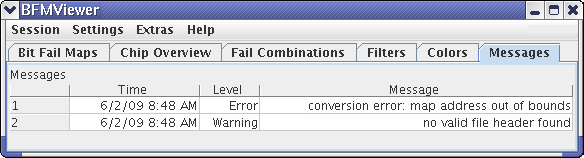
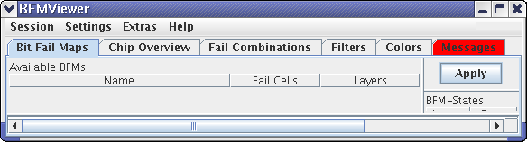

Messages
The Messages tab displays all warnings and error messages from the BFM Viewer.

All messages are displayed in a table with these columns:
- The first, unnamed column, simply numbers the rows.
- Time: The date and time when the message was generated. The newest messages are at the top.
- Level: The message level - Warning or Error.
- Message: The message text describing the issue.
The shortcut menu in this list contains these commands:
- Clear: Choosing this command removes all messages from the tab.
When a message is added to the tab while another tab is selected, the Messages tab turns red to alert you of the fact:

Functional changes
- Introduced before SmarTest 6.3.2